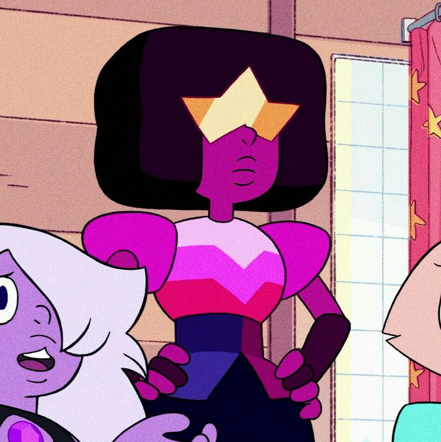
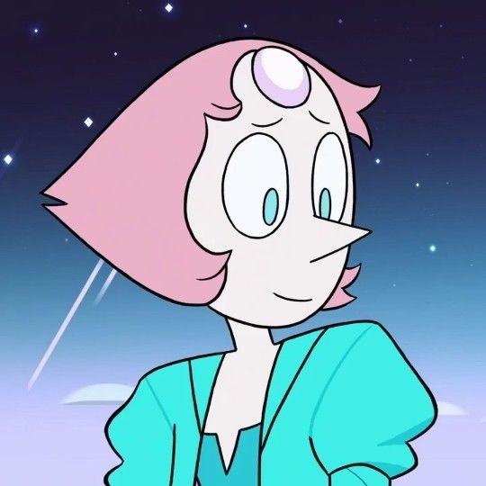
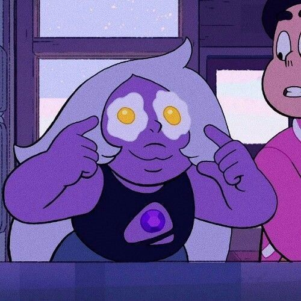
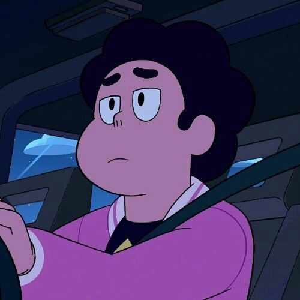
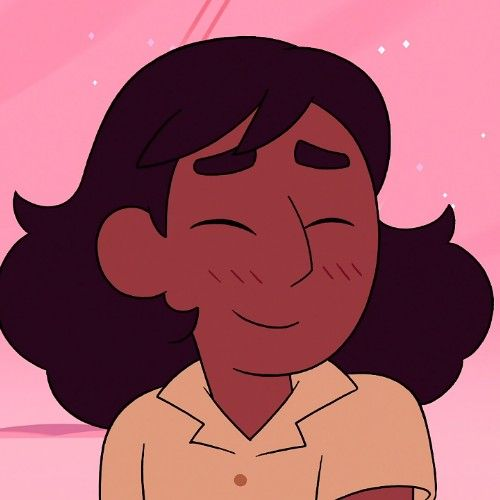
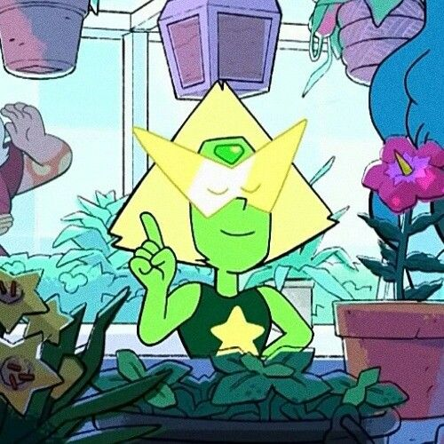
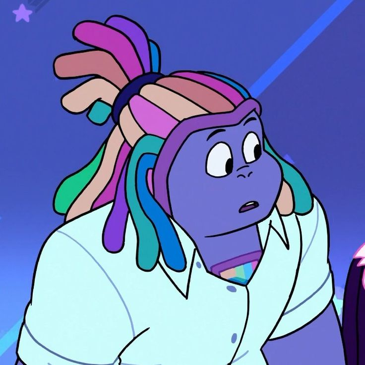
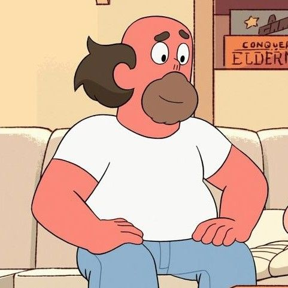
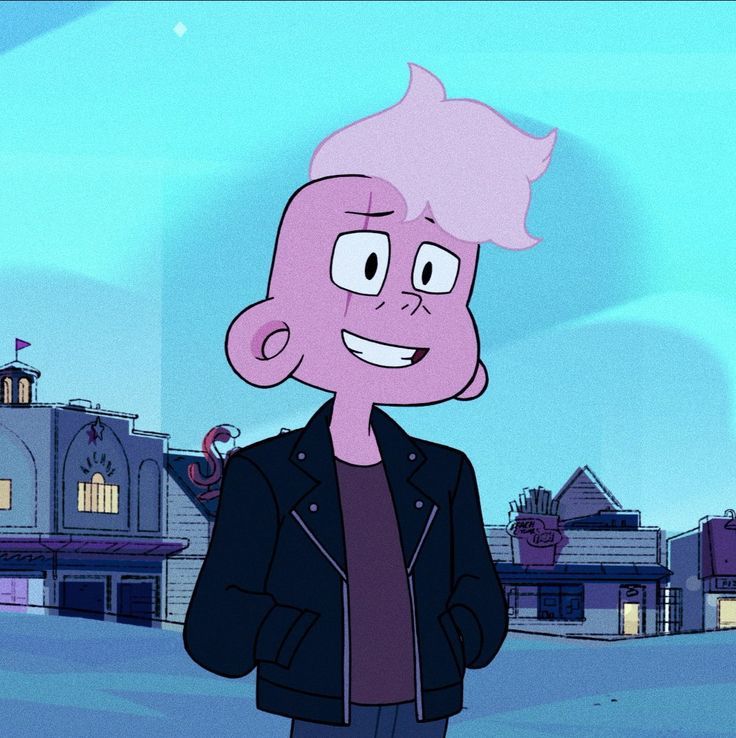
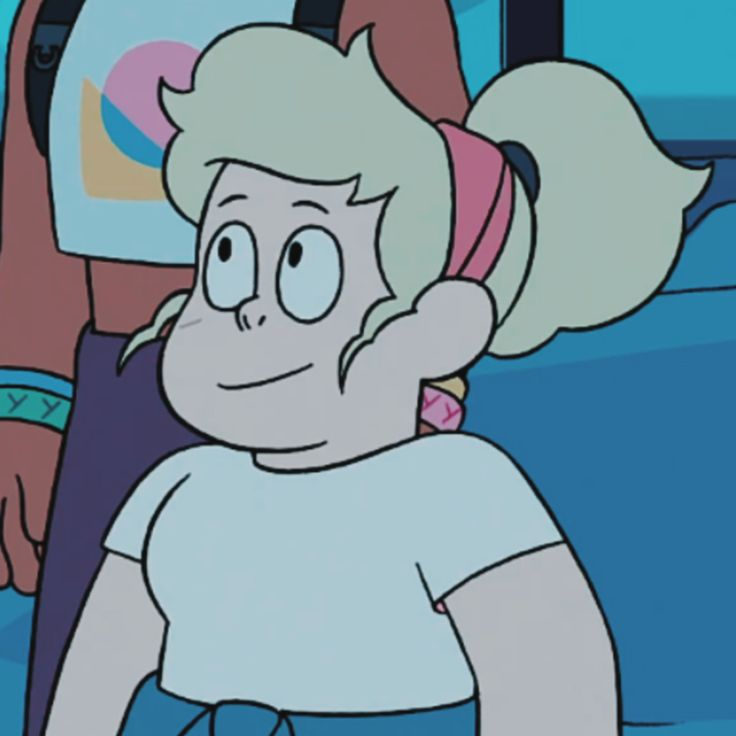

SINOPSE
Em Steven Universe, o mundo é protegido das ameaças do mal pelas Crystal Gems, um grupo de Gems que jurou proteger a Terra de Homeworld. Seus poderes vem de suas pedras (joias mágicas embutidas em algum lugar do corpo do hospedeiro). As quatro Crystal Gems principais são Garnet, Ametista, Perola e Steven. Várias Gems, como Peridote, Lapis Lazuli, Bismuto e uma humana, Connie Maheswaran, também se juntaram à equipe. Steven é um jovem meio humano e meio Gem que herdou sua pedra de sua mãe, a fundadora e ex-líder das Crystal Gem, chamada Rose Quartz, que desistiu de sua forma para criar Steven. Enquanto Steven tenta descobrir os segredos para usar sua Gem, ele passa seus dias em Beach City fazendo atividades com as outras Crystal Gems, seja ajudando-as a salvar o universo ou apenas passeando.
CRYSTAL GEMS

Garnet: líder calma e poderosa das Crystal Gems, é a fusão de Ruby e Safira, representando amor e estabilidade.

Pérola: Elegante e leal, Pérola é estrategista e guerreira habilidosa, tendo servido Rose Quartz com devoção.

Ametista: Espontânea e brincalhona, Ametista é, no início, a mais rebelde das Gems, se tornando depois a mais madura, e melhor amiga do Steven nas Crystal Gems.

Steven Universo: O protagonista, um garoto meio-humano meio-Gem que aprende a usar seus poderes herdados de sua mãe, Rose Quartz, tendo que lidar com os problemas que ela deixou, e seu passo sombrio.

Connie Maheswaran: Melhor amiga e parceira de Steven, destemida e dedicada a aprender a lutar.

Peridote: Uma ex-Gem do Planeta Natal, altamente lógica, mas aprende a se conectar com os outros e valorizar a Terra.

Lápis Lazuli: Uma Gem poderosa com habilidades de manipulação da água, passou por muito sofrimento antes de encontrar paz.

Bismuto: Uma talentosa ferreira das Crystal Gems, forja armas poderosas e tem um forte senso de justiça.
HUMANOS
Connie Maheswaran: Melhor amiga e parceira de Steven, destemida e dedicada a aprender a lutar.

Greg Universo: Pai de Steven, um ex-músico de rock e dono de um lava-rápido, sempre amoroso e descontraído.

Lars: Inicialmente arrogante, Lars passa por grande crescimento, tornando-se um líder corajoso no espaço.

Sadie: Funcionária do Big Rosquinha e amiga próxima de Steven, adora cantar e se descobrir além do trabalho, futuramente se tornando uma grande astro do rock.